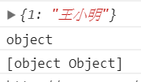
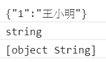
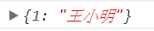

jQuery ajax() Method裡面的dataType參數的用意為指定伺服器回傳的預期檔案格式(The data type expected of the server response.)。
倘若想以JSON格式處理回傳的檔案，但你漏掉這一項設定，其實可以在接收到檔案後使用jQuery.parseJSON()強制轉換格式。
正常情況下：
// 前端發起ajax請求，請求方式為POST方式
function get_something_by_ajax() {
...
$.ajax({
url: get_my_ajax_request,
type: 'POST',
dataType: 'JSON',
data: some_data,
success: function(response_data) {
console.log(response_data)
console.log(typeof(response_data))
console.log(Object.prototype.toString.call(response_data))
...
}
});
}
//後端php接收請求，處理資料後回傳給發請ajax請求的函式
public function get_my_ajax_request() {
$response_data = array('1'=>'王小明');
echo json_encode($response_data);
}
要注意到，當瀏覽器和伺服器互相傳遞資料時，資料的格式只能是文字串
(https://www.w3schools.com/js/js_json_intro.asp >> “When exchanging data between a browser and a server, the data can only be text.”)
json_encode($response_data)使後端回傳了一個JSON字串，且由於dataType: 'JSON',的關係，瀏覽器預期收到一個JSON字串，並會準備解析成JavaScript物件，所以console.log(response_data)顯示的結果會是這樣：

因此我們可以針對這個物件做其中值「王小明」的存取。
若把 dataType: 'JSON', 註解掉，瀏覽器不會解析成JavaScript物件，而是直接接收字串，則 console.log(response_data) 出來的內容則會變成這樣：

這就只是一個字串，若我們只想要值「王小明」是沒辦法的。(如果你只想要字串就沒差)
此時可以在前端中對response_data對處理 => jQuery.parseJSON(response_data)，所以console.log(jQuery.parseJSON(response_data))結果顯示：

這也就是jQuery.parseJSON()的功能：將JSON字符串轉為與之對應的JavaScript物件
坦白說漏掉這一項設定很不應該的…